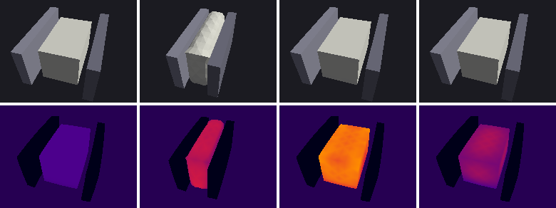
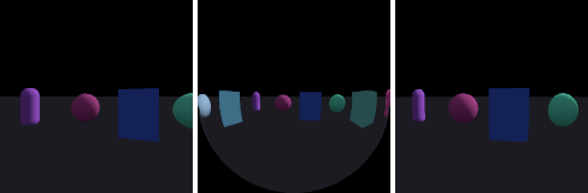
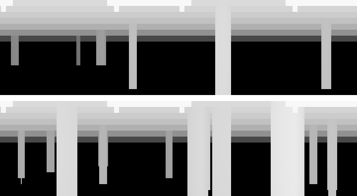
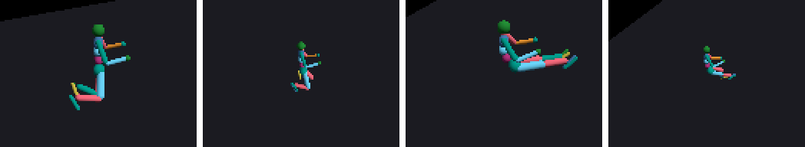

Newton design proposal · draft for review
Declare cameras in ModelBuilder, import them from USD and MJCF, and render them with SensorCamera without hand-maintained pose, ray and world bookkeeping.
ModelBuilder.add_camera(body, *, xform, ...) declares one; add_usd and add_mjcf create them from UsdGeom.Camera prims and <camera> elements. add_builder and replicate copy them into every world.model.camera_*. Resolution, ray bundles and output buffers stay in SensorCamera. This is the same split USD makes between UsdGeom.Camera and UsdRender.Product, and it answers the objection that rays depend on resolution and therefore cannot be model data.SensorCamera gains a cameras= selector that uses the same label matching as SensorIMU(sites=...). A bound sensor works out each view's camera, world and pose from the model and the state, so update(state, color_image=...) needs no transforms, rays or world_indices. The current explicit API is unchanged.RayMode.PRECOMPUTED, fast) or evaluated in the kernel from per-camera intrinsic arrays (RayMode.ANALYTIC, for per-environment intrinsics randomization), like mujoco_warp's use_precomputed_rays. Users bring their own model as data (CameraLens.CUSTOM plus set_camera_rays) or as code (an experimental @wp.func ray function whose parameters can be CAMERA custom attributes).SensorCamera bound to sites, with a custom ray pattern and depth output, is a range scanner. The proposal adds what is missing for that today: site mounting, per-view min and max range, and graph-safe pattern updates.add_sensor(), and no cameras-as-shapes or cameras-as-sites. Sites stay the way to declare frame-only sensors (IMU, frame transform, and lidar through SensorCamera(sites=...)). A sensor kind gets its own Model entity only when assets carry description data that has to survive import and replication. Today that is only cameras.SensorCamera is now Newton's camera sensor (SensorTiledCamera was deprecated in #3913). It is a good renderer, but Newton has no concept of a camera. Every caller passes in three things on every update() call (sensor_camera.py:900):
camera.update(
state,
camera_transforms, # (view_count,) world-space poses, computed by the caller every frame
camera_rays, # (H, W, S, 2) one lens + resolution, shared by every view
world_indices=..., # (view_count,) which world each view renders
color_image=color,
)Everything that describes the camera itself (where it is mounted, which world it belongs to, its lens, its clip range) therefore lives in user code. The consequences show up in Newton's own example and, more seriously, in Isaac Lab:
body_q with a mount offset (example_sensor_camera.py:94 fill_body_camera_transforms). Isaac Lab runs a whole parallel site system for this (NewtonSiteFrameView: its own site_body/site_local arrays, body-ancestor resolution, per-world expansion and pose kernel), even though Newton's own add_site is what IMU, frame transformer and ray caster use.world_indices and the view order are implicit conventions that callers have to rebuild. This was the main confusion in the #3276 review, and Isaac Lab has had several ordering bugs in this area (IsaacLab #8545, #7688).add_usd and add_mjcf drop camera prims and <camera> elements. Isaac Lab reads intrinsics back from the USD stage at init and builds its own K matrix and ray kernel, so the Newton Warp path still needs a stage.RenderConfig.max_distance, which is baked into the kernel with wp.static (render.py:182). Isaac Lab overwrites the shared default config before every camera's render, and the near clip is never applied.These requirements come from reading Isaac Lab main (8c9b995) and its issue tracker, from the prior Newton PRs, and from how mujoco_warp handles cameras. "Source" names the evidence.
| ID | Requirement | Source |
|---|---|---|
| R1 | Declare cameras on the per-env prototype before replication, and let cloning create the per-world copies with stable ordering. | Isaac Lab spawns camera prims before replication; IsaacLab #8000 "Cloning owns ... declared cameras"; #8545, #7688 ordering bugs; only env_0 camera prims exist in USD (#6928, #7036) |
| R2 | Parse cameras from USD and MJCF, resolving the parent rigid body even through non-body Xform ancestors. | Isaac Lab and MJCF-based workflows; IsaacLab #8211 (camera under a non-body articulation Xform failed to resolve) |
| R3 | Attach to a body with a local offset, or fix to the world or env frame; poses evaluated from State each step. | Isaac Lab NewtonSiteFrameView; Newton example kernel |
| R4 | Precomputed rays for speed and for arbitrary custom lenses. | Rendering cost of per-pixel ray generation; calibrated lens models that no built-in helper covers |
| R5 | Per-environment, runtime-changeable intrinsics (domain randomization) that stay CUDA-graph safe. | mujoco_warp use_precomputed_rays=False, documented for camera-intrinsics randomization; IsaacLab #7916; the "identical intrinsics" error above |
| R6 | Render a subset: choose cameras statically, and mask environments or views per call. | Multi-camera scenes rarely need every camera every step; newton#3276 ("disable cameras ... once they don't need further training"); Isaac Lab env_mask and update periods |
| R7 | Several cameras per world, with different resolutions, sharing one scene representation. | Isaac Lab: one CameraCfg per camera, each with its own size; the renderer shares one Newton sensor across them |
| R8 | Per-camera clip range (near and far). | Isaac Lab clipping_range; max_distance overwrite |
| R9 | Tiled batching: all worlds for a camera in one launch, and heterogeneous worlds allowed. | Tiled rendering throughput; Newton supports heterogeneous worlds |
| R10 | Runtime pose writes (set_world_poses, resets, mount-offset randomization). | Isaac Lab Camera.set_world_poses; #8664, #8665, #8682 stale or misplaced poses |
| R11 | Lens distortion (OpenCV pinhole and fisheye, F-theta, Kannala-Brandt). | Isaac Lab OpenCv*DistortionCfg; newton#3578; existing compute_camera_rays_* helpers |
| R12 | Zero cost when unused: a camera in the model costs nothing until a sensor renders it. | Newton convention; USD stages often carry viewport cameras |
| R13 | User-defined camera models (calibrated, exotic or research lenses) without changing Newton, including per-environment parameters. | Lens models no built-in helper covers; newton#3578; Isaac Lab distortion cfgs |
| R14 | Range sensing (lidar-style) on the same ray machinery, without a new ray-sensor class. | Review of newton#3347 (consolidate ray sensing around the camera sensor and intersect_ray); Isaac Lab ray caster on sites |
| R15 | Custom imaging modalities (thermal, material or semantic channels) computed from per-hit data and user attributes, without changing the renderer. | Prototype thermal camera (section 14); Isaac Lab segmentation remapping from shape_index_image |
SensorCamera. USD makes the same cut: UsdGeom.Camera has no resolution, and resolution lives on UsdRender.Product, which points at a camera. This settles a recurring design question: rays never go in the Model, because they depend on resolution, but cameras do.-1) is a single declaration that renders every world. This is the "observer camera" case that the example and #3627 both had to special-case.add_camera(body, *, xform, label, custom_attributes) follows add_site. SensorCamera(model, cameras=...) follows SensorIMU(model, sites=...) and label matching. Model arrays use the camera_* prefix and the existing AttributeSpec registry, so replicate, add_builder, custom attributes and model views all handle them.SensorCamera(model) with no cameras= behaves exactly as it does today. A bound sensor can still be given explicit camera_transforms or camera_rays as per-call overrides, which keeps custom lenses and externally driven poses simple.body_q from the State on every update.ModelBuilder.add_cameraThe signature mirrors add_site (a positional body, then keyword-only xform, label and custom_attributes). The intrinsics parameters reuse the names of the existing SensorCamera.compute_camera_rays_pinhole helper, so the same words mean the same thing everywhere.
def add_camera(
self,
body: int,
*,
xform: Transform | None = None,
lens: CameraLens = CameraLens.PINHOLE,
fov: float | None = None,
focal_length: float | None = None,
horizontal_aperture: float | None = None,
vertical_aperture: float | None = None,
horizontal_aperture_offset: float = 0.0,
vertical_aperture_offset: float = 0.0,
clipping_range: tuple[float, float] = (0.01, 1.0e6),
resolution: tuple[int, int] | None = None,
label: str | None = None,
custom_attributes: dict[str, Any] | None = None,
) -> int:
"""Add a pinhole camera rigidly attached to a body or to the world.
The camera looks along its local -Z axis with +Y up and +X right
(USD, OpenGL and MuJoCo convention).
Args:
body: Parent body index, or -1 for a camera fixed in the world
frame of the current world context.
xform: Camera frame relative to the parent body [m, rad]. For
``body == -1`` it is the world-frame pose. Defaults to identity.
lens: Lens model. ``PINHOLE`` uses the intrinsics below.
``CUSTOM`` means the rays are supplied to the sensor (custom
rays or a ray function) and the intrinsics are ignored.
fov: Vertical field of view [rad]. Mutually exclusive with
``focal_length``. The horizontal extent then follows the image
aspect ratio (square pixels), which matches MJCF ``fovy``.
focal_length: Lens focal length [m]. Only ratios with the aperture
affect the projection.
horizontal_aperture: Sensor width [m]. If ``None`` or 0, it is
derived from ``vertical_aperture`` and the image aspect ratio.
vertical_aperture: Sensor height [m]. If ``None`` or 0, it is
derived from ``horizontal_aperture`` and the image aspect ratio.
horizontal_aperture_offset: Principal-point offset [m].
vertical_aperture_offset: Principal-point offset [m].
clipping_range: (near, far) distances [m]. Hits outside the range
are reported as misses.
resolution: Nominal (width, height) [px] authored by the asset.
Only a default for sensors; it does not allocate anything.
label: Unique label, e.g. a USD prim path. Defaults to
``camera_{index}``.
custom_attributes: Values for CAMERA-frequency custom attributes.
Returns:
The camera index.
"""If no intrinsics are given, the camera gets fov = radians(45), the MuJoCo default. newton.CameraLens starts with PINHOLE and CUSTOM. Built-in distortion models (OpenCV, fisheye, F-theta, Kannala-Brandt) are added in phase 2; until then a distorted lens is a CUSTOM camera with rays from the existing helpers (section 7.2).
| Attribute | Type, shape | Notes |
|---|---|---|
camera_count | int | |
camera_label | list[str] | Label matching target for SensorCamera(cameras=...). |
camera_world | array[int32] (camera_count,) | -1 = global (renders every world). Spec references WORLD. |
camera_world_start | array[int32] (world_count + 2,) | Same layout as shape_world_start. |
camera_body | array[int32] (camera_count,) | -1 = fixed. Spec references BODY, so coupled-model views remap it. |
camera_transform | array[transform] (camera_count,) | Body-local mount (or world pose for body == -1). Writable at runtime (R10). |
camera_lens | array[int32] (camera_count,) | CameraLens value. CUSTOM cameras take their rays from the sensor. |
camera_focal_length | array[float32] (camera_count,) | [m]. Writable at runtime (R5). |
camera_aperture | array[vec2] (camera_count,) | (horizontal, vertical) [m]; a 0 component is derived from the image aspect. |
camera_aperture_offset | array[vec2] (camera_count,) | Principal-point offset [m]. |
camera_clipping_range | array[vec2] (camera_count,) | (near, far) [m]. Replaces the global max_distance for bound sensors (R8). |
camera_resolution | array[vec2i] (camera_count,) | Nominal (width, height) [px]; (0, 0) = none. |
A new Model.AttributeFrequency.CAMERA lets importers and users attach per-camera data such as semantic tags, ISP settings, randomization ranges or the parameters of a user camera model (7.3), using the same mechanism as every other entity. There is deliberately no per-camera ray array, sensor object or enabled flag in the Model: those are render state (P1), and enabling is a sensor concern (view_mask).
Why intrinsics are device arrays and not frozen lens objects. An earlier prototype stored deduplicated CameraPinhole(...) Python objects plus an index. That is tidy for import, but it cannot express per-world randomized intrinsics without a host round trip. Flat arrays can be written by a randomization kernel inside a CUDA graph and read directly by the analytic ray kernel (R5), the same way mujoco_warp batches cam_fovy/cam_intrinsic.
SensorCamera is the established camera sensor, so this extends it rather than adding a new class. The constructor gains a frame source (model cameras or sites) and a choice of ray source. Everything new is keyword-only and defaults to today's behavior.
class SensorCamera:
class RayMode(IntEnum):
PRECOMPUTED = 0 # cache built-in lens rays, one bundle per distinct lens (default)
ANALYTIC = 1 # evaluate built-in lens rays in the kernel from model intrinsics
@wp.struct
class RayQuery: # input to a user ray function (section 7.3), experimental
view: int
camera: int # model camera index, or site index for site-bound sensors
world: int
x: int
y: int
sample: int
width: int
height: int
sample_count: int
def __init__(
self,
model: Model,
*,
cameras: str | list[str] | re.Pattern[str] | list[int] | None = None,
sites: str | list[str] | re.Pattern[str] | list[int] | None = None,
width: int | None = None,
height: int | None = None,
sample_count: int = 1,
ray_mode: RayMode = RayMode.PRECOMPUTED,
ray_function: wp.Function | None = None, # experimental
ray_params: wp.array2d[wp.float32] | None = None, # experimental
clipping_range: tuple[float, float] | None = None,
default_clear_data: ClearData | None = None,
default_render_config: RenderConfig | None = None,
load_textures: bool = True,
): ...
# Available when constructed with ``cameras`` or ``sites``:
view_count: int # number of rendered views
width: int
height: int
view_camera: wp.array[wp.int32] # model camera (or site) index per view
view_world: wp.array[wp.int32] # world index per view
HIT_TRIANGLE_MESH, HIT_PARTICLES, HIT_NONE # shape_index_image sentinels (section 7.5)
def compute_view_transforms(self, state, out=None) -> wp.array[wp.transformf]: ...
def set_camera_rays(self, rays, *, cameras=None) -> None: ... # custom rays (section 7.2)
def sync_camera_rays(self) -> None: ... # PRECOMPUTED: rebuild after intrinsics change
def update(
self,
state: State,
camera_transforms: wp.array[wp.transformf] | None = None, # now optional
camera_rays: wp.array4d[wp.vec3f] | None = None, # now optional
*,
color_image=None, depth_image=None, forward_depth_image=None,
shape_index_image=None, normal_image=None, albedo_image=None,
hdr_color_image=None,
view_mask: wp.array[wp.bool] | None = None, # new
face_index_image: wp.array3d[wp.int32] | None = None, # new, per-hit data
barycentric_image: wp.array3d[wp.vec2f] | None = None, # new, per-hit data
world_indices: wp.array[wp.int32] | None = None,
clear_data=None, render_config=None, sync_deformables=True,
) -> None: ...cameras selects model cameras by label matching on model.camera_label. Their frames and optics come from the Model. sites instead selects sites, which provide only a frame. A site-bound sensor therefore needs its rays from set_camera_rays, a ray_function or the per-call camera_rays, and its clip range from clipping_range (default (0, inf)). This is how ray sensors such as lidar are built (section 12). Pass at most one of the two; with neither, the sensor is unbound and behaves as today. The selection is fixed at construction, like SensorIMU(sites=...), which is the static half of R6.w ≥ 0 produces one view that renders world w. Each selected global one produces one view per world. Views are ordered by index, then world. For a pattern such as "*/wrist_cam" on a replicated scene, view i is environment i, so the output is (num_envs, H, W) with no reshaping. view_camera and view_world make the mapping explicit (R1).width and height default to camera_resolution when all selected cameras agree, and otherwise are required. One sensor has one resolution, because outputs are dense (view_count, H, W) arrays. Different resolutions use different sensors (R7).update() launches a small kernel, view_pose = body_q[body] * frame_transform (using the camera or site mount, or just the transform for fixed frames), into an internal buffer with a stable address, then renders. Both launches are graph capturable. An explicit camera_transforms argument overrides the computed poses for that call.view_mask[v] == False skips view v and leaves its outputs untouched (the existing WorldRenderFlag.DISABLE_PRESERVE path). This is the dynamic half of R6: update periods, partial resets, retired cameras.wp.static max_distance, which removes the kernel variant per far value and adds near clipping (R8). The values come from camera_clipping_range for cameras, or from clipping_range for sites; passing clipping_range also overrides the camera values.SensorCamera instances for the same model and load_textures setting share one internal RenderContext (BVH bindings, textures, lights). Several bound sensors (one per resolution, camera group or lidar) then cost what the single shared Isaac Lab sensor costs today (R7). See open question 5 on lights.face_index_image and barycentric_image report which triangle, mesh face or particle each pixel hit and where. Together with shape_index_image they let user kernels compute new imaging channels (section 7.5). allocate_image_face_index() and allocate_image_barycentric() allocate them.cameras nor sites, camera_transforms and camera_rays are required, as they are today, and the view_* attributes raise.import warp as wp
import newton
from newton.sensors import SensorCamera
robot = newton.ModelBuilder()
robot.add_usd("franka.usda") # UsdGeom.Camera prims in the asset are imported as well
hand = robot.body_label.index("/franka/panda_hand")
robot.add_camera(hand, xform=wp.transform((0.0, 0.0, 0.05), wp.quat_identity()),
fov=1.0, clipping_range=(0.02, 3.0), label="wrist_cam")
builder = newton.ModelBuilder()
builder.add_ground_plane()
builder.add_camera(-1, xform=overview_pose, fov=0.8, label="overview") # global: every world
builder.replicate(robot, copy_count=1024, label_prefixes=[f"env_{i}" for i in range(1024)])
model = builder.finalize()
wrist = SensorCamera(model, cameras="env_*/wrist_cam", width=128, height=128)
overview = SensorCamera(model, cameras="overview", width=640, height=480)
wrist_rgb = wrist.allocate_image_color() # (1024, 128, 128); view_count/size default from the sensor
overview_rgb = overview.allocate_image_color()
for _ in range(steps):
solver.step(state_0, state_1, control, contacts, dt)
model.bvh_refit_shapes(state_1)
wrist.update(state_1, color_image=wrist_rgb)
overview.update(state_1, color_image=overview_rgb)This removes the two transform kernels, the two hand-built ray bundles and the world_indices array that example_sensor_camera.py needs today.
A camera model is a mapping from (pixel, sample) to a ray in the sensor frame: an origin and a direction. Everything in this section is about who defines that mapping and whether the sensor caches its output. Rays never live in the Model, because they depend on resolution. Lens parameters may live in the Model, either as the built-in intrinsic arrays or as CAMERA-frequency custom attributes.
Ray contract, shared by every source below:
depth_image as the hit parameter along the ray without normalizing it, so it is a metric range only for unit directions. The built-in helpers already normalize.forward_depth_image. Custom rays can point anywhere, including behind the frame.| Source | Lens defined by | Rays live in | Varies per env | Use for |
|---|---|---|---|---|
| 1. PRECOMPUTED | Model intrinsics (built-in lens) | Sensor, one bundle per distinct lens | Possible, at one bundle per env | Default; fast; MSAA/SSAA |
| 2. ANALYTIC | Model intrinsics (built-in lens) | Nowhere | Yes, free | Intrinsics randomization (R5) |
| 3. Custom rays | Any user kernel or calibration table | Sensor, one bundle per set_camera_rays group | At one bundle per env | Calibrated or exotic lenses, scan patterns (R13, R14) |
| 4. Ray function experimental | User @wp.func + parameters | Nowhere | Yes, free | Parametric custom models with randomization, time-varying scans |
Both modes read the same Model arrays; they differ only in whether the sensor caches the derived rays. PRECOMPUTED groups the selected cameras by identical intrinsics and stores one bundle per group. After writing model.camera_*, sync_camera_rays() rebuilds the bundles in place at a stable address, and raises if the grouping of equal lenses changes. ANALYTIC stores nothing and evaluates the pinhole projection per pixel from camera_*[view_camera[v]], so per-environment intrinsics cost no memory (a per-env bundle would be 4096 × 128² × 2 × 12 B ≈ 1.6 GB).
Kernel change. The render kernel currently reads camera_rays[py, px, s, k] from a single bundle (render.py:589, render.py:690). It gains a wp.static switch between a bundle indexed by view_ray_bundle[view] and an inline ray generator. newton#3276 (camera_indices[:, 1]) and mujoco_warp (ray_offset) both used a per-view bundle index, so that half is already proven.
# Per-env focal-length randomization, captured in the same CUDA graph as the render.
wrist = SensorCamera(model, cameras="env_*/wrist_cam", width=128, height=128,
ray_mode=SensorCamera.RayMode.ANALYTIC)
@wp.kernel
def randomize_focal(seed: int, nominal: float, focal: wp.array[float]):
c = wp.tid()
focal[c] = nominal * (1.0 + 0.1 * (wp.randf(wp.rand_init(seed, c)) - 0.5))
wp.launch(randomize_focal, dim=model.camera_count, inputs=[seed, 0.024, model.camera_focal_length])
wrist.update(state, color_image=rgb) # each env renders with its own focal lengthA camera declared with lens=CameraLens.CUSTOM has no analytic model, and its intrinsic fields are ignored. Its rays come from the sensor:
sensor.set_camera_rays(rays, cameras=None)
# rays: (H, W, S, 2) vec3f, shared by the matched cameras, or
# (N, H, W, S, 2) vec3f, one bundle per matched camera (e.g. per-env calibrations)
# cameras: label pattern selecting a subset of this sensor's cameras; None = all of themH, W and S must match the sensor's height, width and sample_count.update() raises if a selected CUSTOM camera has no rays. ANALYTIC mode raises for CUSTOM cameras rather than guessing a model.camera_rays= override in update() stays as an escape hatch and remains the only option for unbound sensors.proto.add_camera(hand, xform=mount, lens=newton.CameraLens.CUSTOM,
resolution=(640, 480), label="wrist_cam")
...
wrist = SensorCamera(model, cameras="env_*/wrist_cam", width=640, height=480)
rays = my_calibrated_lens_rays(640, 480, device=model.device) # (480, 640, 1, 2), any kernel
wrist.set_camera_rays(rays)
wrist.update(state, color_image=rgb)Data alone cannot express a custom model whose parameters change per environment without one bundle per environment, or a scan pattern that changes every step without re-uploading rays. For those cases a sensor accepts a user @wp.func that the render kernel inlines in place of the built-in pinhole. The render kernel is already specialized per configuration with wp.static, so the function is captured the same way and compiled once per distinct function.
(params, query: SensorCamera.RayQuery) -> (origin, direction), following the ray contract above.params is a wp.array2d[float32] table passed as ray_params, typically one row per model camera (indexed by query.camera) or per world. It lives on the device, so values and step counters can be written inside a captured graph. The prototype settled on this fixed type because it keeps the render kernel's signature stable; arbitrary user structs remain an open question.newton:<namespace>:<name>) or MJCF, parsed by the importers, replicated per world, and can be randomized, with no Newton change. A one-line kernel gathers them into the parameter table.# A barrel-distorted lens whose field of view and distortion are per-camera custom attributes.
for name in ("lens_fov", "lens_k1"):
builder.add_custom_attribute(
ModelBuilder.CustomAttribute(
name=name, namespace="thermal", frequency=Model.AttributeFrequency.CAMERA, dtype=wp.float32
)
) # USD: newton:thermal:lens_fov / newton:thermal:lens_k1 on the camera prim
builder.add_camera(-1, xform=pose, lens=newton.CameraLens.CUSTOM, resolution=(192, 144), label="thermal_cam",
custom_attributes={"thermal:lens_fov": 0.73, "thermal:lens_k1": 0.12})
@wp.func
def barrel_lens(params: wp.array2d[wp.float32], q: SensorCamera.RayQuery):
half = wp.tan(0.5 * params[q.camera, 0])
k1 = params[q.camera, 1]
x = ((float(q.x) + 0.5) / float(q.width) - 0.5) * 2.0 * half * float(q.width) / float(q.height)
y = (0.5 - (float(q.y) + 0.5) / float(q.height)) * 2.0 * half
scale = 1.0 + k1 * (x * x + y * y) / (half * half)
return wp.vec3f(0.0), wp.normalize(wp.vec3f(x * scale, y * scale, -1.0))
@wp.kernel
def gather(fov: wp.array[float], k1: wp.array[float], out: wp.array2d[float]):
c = wp.tid()
out[c, 0] = fov[c]
out[c, 1] = k1[c]
params = wp.zeros((model.camera_count, 2), dtype=wp.float32)
wp.launch(gather, model.camera_count, inputs=[model.thermal.lens_fov, model.thermal.lens_k1], outputs=[params])
thermal = SensorCamera(model, cameras="thermal_cam", ray_function=barrel_lens, ray_params=params)
# Randomize model.thermal.lens_k1 per camera and gather again; the next update() uses the new values.mujoco_warp's camera model is what MJCF can describe: cam_projection (perspective or orthographic), cam_fovy, cam_sensorsize and cam_intrinsic, with no lens type and no distortion. With use_precomputed_rays=True, create_render_context fills flat rc.ray/rc.ray_offset arrays from the unbatched intrinsics, one block per active camera, shared by all worlds. With False, the kernel calls the same compute_ray with per-world cam_fovy/cam_intrinsic, which is the documented path for intrinsics randomization. Both paths are the same analytic model, so "precomputed" is a cache, not an extension point. Custom lenses are only possible by overwriting rc.ray in place, with an implicit layout and per-ray origins honored only if the model also has an orthographic camera. Sources 1 and 2 above match mujoco_warp; sources 3 and 4 are where this design goes further.
Some sensors need a different quantity per pixel rather than different rays: temperature for a thermal camera, a material or semantic ID, an emissivity-weighted radiance. Compiling user shading into the renderer would couple every such sensor to renderer internals. Instead the sensor reports what each ray hit, and a user kernel computes the quantity:
shape_index_image: the shape index, or SensorCamera.HIT_TRIANGLE_MESH for deformable triangle surfaces, HIT_PARTICLES for particles, and HIT_NONE for misses.face_index_image: the triangle index into Model.tri_indices for deformable hits, the face index for mesh shapes, or the particle index.barycentric_image: the barycentric coordinates (u, v) of the hit, using Warp's convention p = u·p0 + v·p1 + (1 − u − v)·p2.With these three images, any per-vertex, per-particle or per-shape attribute (including custom attributes) can be interpolated at the hit point. Requesting barycentrics makes the kernel use its full hit path, because the depth-only path skips them. The prototype's thermal camera (section 14) is built this way:
@wp.kernel
def compose_thermal(shape_index: wp.array3d[wp.uint32], face: wp.array3d[wp.int32], bary: wp.array3d[wp.vec2f],
tri_indices: wp.array2d[wp.int32], vertex_temp: wp.array[float], shape_temp: wp.array[float],
background: float, out_temp: wp.array2d[float]):
y, x = wp.tid()
s = shape_index[0, y, x]
t = background
if s == wp.uint32(wp.static(SensorCamera.HIT_TRIANGLE_MESH)):
f = face[0, y, x]
b = bary[0, y, x]
t = (b[0] * vertex_temp[tri_indices[f, 0]] + b[1] * vertex_temp[tri_indices[f, 1]]
+ (1.0 - b[0] - b[1]) * vertex_temp[tri_indices[f, 2]])
elif s < wp.uint32(0xFFFFFFF0):
t = shape_temp[wp.int32(s)]
out_temp[y, x] = t
thermal.update(state, shape_index_image=si, face_index_image=fi, barycentric_image=bc)
wp.launch(compose_thermal, (thermal.height, thermal.width),
inputs=[si, fi, bc, model.tri_indices, model.thermal.temperature, model.thermal.surface_temperature, 12.0],
outputs=[temperature_image])Both importers gain a flag named after their existing site flags: add_usd(..., load_cameras=True) (next to load_sites) and add_mjcf(..., parse_cameras=True) (next to parse_sites). Body resolution uses the same "nearest rigid-body ancestor, fold intermediate Xforms into the local transform" rule as sites and visual shapes, which fixes the IsaacLab #8211 class of failures by construction.
UsdGeom.Camera)| USD | Model | Notes |
|---|---|---|
| prim path | camera_label | Matches Isaac Lab prim_path patterns. |
xformOps up to the nearest RigidBodyAPI ancestor | camera_body, camera_transform | No body ancestor: body = -1, world pose with up-axis conversion and import xform, as compute_camera_transforms_usd does today. |
focalLength | camera_focal_length | Tenths of a scene unit, converted to [m] with metersPerUnit. |
horizontalAperture, verticalAperture | camera_aperture | Same unit conversion. |
horizontalApertureOffset, verticalApertureOffset | camera_aperture_offset | |
clippingRange | camera_clipping_range | Scene units to [m]. Neither prior PR read this; Isaac Lab needs it. |
projection = "orthographic" | — | Warn and skip (phase 1). |
UsdRender.Product whose camera rel targets the prim | camera_resolution | Optional hint from standard OpenUSD; no Newton schema needed. |
| Custom attributes on the prim | CAMERA-frequency custom attributes | Existing custom-attribute parsing. |
| Lens distortion attributes (as authored by Isaac Lab's distortion cfgs) | — | Phase 2; read as plain attributes, with no Omniverse dependency. |
Schema disposition (required by CODING_GUIDELINES "USD schema and importer support"): supported through standard UsdGeom.Camera and UsdRender.Product, with no new schema in phase 1. Lens distortion is deferred to phase 2 and needs an owner and an issue (it can track newton#3578). Tests must check that a USD-authored camera and an equivalent add_camera call produce identical Model rows, including defaults, units, frames and invalid inputs.
<camera>)| MJCF | Model | Notes |
|---|---|---|
enclosing <body> / <worldbody> / <frame> | camera_body | Uses class/childclass defaults. |
name | camera_label | |
pos, quat / axisangle / xyaxes / zaxis / euler | camera_transform | The MuJoCo camera frame is already -Z forward and +Y up, so no conversion is needed. |
fovy [deg] | focal length + vertical aperture; aperture.x = 0 | The horizontal extent follows the image aspect, as in MuJoCo. |
focal + sensorsize (+ principal) | focal length, aperture (+ offset) | Physical units. |
focalpixel / principalpixel + resolution | converted to the above | Uses sensorsize/resolution as the pixel pitch. |
resolution | camera_resolution | |
mode ≠ fixed, target | imported as fixed | Warn. The original mode is kept in a CAMERA-frequency custom attribute for a later tracking-camera phase. |
orthographic="true" | — | Warn and skip. |
Cameras follow the rules shapes already follow in add_builder/replicate: the body index is remapped, the world becomes the destination world, world-fixed cameras (body == -1) inside the source builder get the per-copy xform/spacing applied, and label_prefixes are prepended. Global cameras are only ever declared at the global scope of the outer builder.
Heterogeneous worlds need no special handling. If world 7 has no wrist camera, the pattern simply matches one fewer camera, and view_world tells the caller which environments are present. This is the case that "one SensorCamera per camera replicated like meshes" (#3627) could not express.
Isaac Lab already registers IMU, frame-transformer and ray-caster sites on the prototype builder before replication (NewtonManager.cl_register_site → builder.add_site). Cameras would follow the same path, either from the env_0 USD prim it already spawns or directly from CameraCfg:
# Prototype builder, before replication (R1)
proto.add_usd(stage, root_path="/World/envs/env_0", load_cameras=True)
# ...or straight from the config, like cl_register_site does for sites:
proto.add_camera(
body=hand_body,
xform=offset_in_opengl_convention, # CameraCfg.OffsetCfg converted once
focal_length=lens_m(cfg.spawn.focal_length), # cfg lens units -> [m]
horizontal_aperture=lens_m(cfg.spawn.horizontal_aperture),
clipping_range=cfg.spawn.clipping_range,
resolution=(cfg.width, cfg.height),
label="Robot/ee_link/palm_link/Camera",
)
builder.replicate(proto, copy_count=num_envs,
label_prefixes=[f"/World/envs/env_{i}" for i in range(num_envs)])
model = builder.finalize()
# One SensorCamera per CameraCfg (R7); all share the model's RenderContext.
cam = SensorCamera(model, cameras="/World/envs/env_*/Robot/ee_link/palm_link/Camera",
width=cfg.width, height=cfg.height,
ray_mode=SensorCamera.RayMode.ANALYTIC) # if intrinsics are randomized (R5)
rgb = cam.allocate_image_color() # (num_envs, H, W), aliased into the torch buffer
depth = cam.allocate_image_depth_forward()
# Inside the physics CUDA graph
cam.update(state, color_image=rgb, forward_depth_image=depth, view_mask=envs_due) # R6NewtonSiteFrameView (body-ancestor search, per-world expansion, pose kernel).default_render_config.max_distance overwrite before each render.ros/world offsets → OpenGL, at declaration time).shape_index_image (unchanged).set_world_poses: converts the desired world pose to a mount offset and writes model.camera_transform (R10).SensorTiledCamera to SensorCamera, which it has to do anyway.The useful way to compare the options is to ask where each piece of camera data lives. Model = replicated scene description, Sensor = render state, User = recomputed by the caller.
| Option | Frame / body / world | Intrinsics | Resolution & rays | Verdict |
|---|---|---|---|---|
| A. Status quo + import helpers importers return camera descriptors |
User | User | User | Reject Does not solve R1, R3 or R9; Isaac Lab keeps its parallel site system. |
B. Camera as a shapeadd_shape_camera, #3627 description |
Model in shape_* | Sensor obj in Model | Sensor obj in Model | Reject A camera is not geometry. It grows shape_count, which sizes collision and BVH data, so every shape consumer needs another skip. It also puts render state inside the Model. |
C. Camera bound to a siteadd_site(camera=SensorCamera), #3627 final |
Model site shape | Sensor obj in Model | Sensor obj in Model | Partial Reuses site plumbing, but the sensor must exist before finalize, there is one lens and resolution per sensor and at most one camera per world per sensor, and importers return specs that users must turn into sensors. UsdGeom.Camera is not a site prim. |
D. Generic add_sensor()sensor_* arrays for all kinds |
Model | untyped param bag | ? | Reject Sensors share only a frame, and sites already provide that. The rest diverges (optics, contact pairs, lidar patterns). This is the vague "Entity" abstraction the guidelines warn against. |
| E. Model entity with deduped lens objects earlier prototype PR |
Model | Python objects | Sensor custom rays in Model | Close The right structure, but host-side lens objects block per-env randomization (R5), and custom rays in the Model contradict P1. |
| F. Model entity, device intrinsics this proposal |
Model | Model arrays | Sensor | Proposed Meets R1–R10 and R12–R14; R11 in phase 2. |
Why not "one SensorCamera per camera, replicated like meshes"? Newton has no shared-asset-to-instance mapping for shapes either: meshes are shared, but shape instances are per world. Cameras need the same per-instance treatment for heterogeneous worlds and per-env intrinsics. The underlying goal of that design, one array of camera records instead of loose index arrays, is met by the view table, which the sensor owns, not the user.
A scanning range sensor is a set of rays from a mounted frame plus the hit distance along each ray. SensorCamera already traces arbitrary per-ray origins and directions and writes depth_image, so with sites as a frame source (6.1) and sensor-owned custom rays (7.2, 7.3), a lidar needs no new sensor class. That also matches the direction from the review of newton#3347 (the closed SensorLidar request newton#3346): consolidate ray sensing around the camera sensor and newton.intersect_ray, and keep models of specific scanners downstream. Newton provides the mechanism, and a scanner model is a ray pattern or ray function.
# Mount: an ordinary site; no new Model concept.
robot.add_site(base, xform=wp.transform((0.0, 0.0, 0.35), wp.quat_identity()), label="lidar")
...
channels, steps = 32, 1024
lidar = SensorCamera(model, sites="env_*/lidar", width=steps, height=channels,
clipping_range=(0.3, 100.0)) # min / max range [m]
lidar.set_camera_rays(spinning_pattern(channels, steps)) # (32, 1024, 1, 2), unit dirs in the site frame
ranges = lidar.allocate_image_depth() # (num_envs, 32, 1024) [m]
no_return = SensorCamera.ClearData(clear_depth=-1.0) # miss value
lidar.update(state, depth_image=ranges, clear_data=no_return)
# Optional: shape_index_image for per-point semantics, normal_image for incidence angle.Irregular patterns (rosette or solid-state scanners, sparse fans) use a (1, N) "image", or a grid with zero directions in unused slots. Non-repeating patterns either call set_camera_rays each step (a graph-safe copy) or use a ray function that reads a step counter from its parameters.
Most of it is already there. These are the gaps, and what closes them:
| Aspect | Today | With this proposal |
|---|---|---|
| Range output | Works depth_image is the hit parameter along each ray: metric range for unit directions | Unchanged; the ray contract (7) requires unit directions |
| Cost of depth-only | Works the kernel skips shading when no color, albedo or HDR output is requested | Unchanged |
| Arbitrary patterns | Works rays are independent per pixel; zero directions skip | Sensor-owned, graph-safe updates via set_camera_rays |
| Miss value | Works ClearData.clear_depth (default 0) | Unchanged |
| Mounting and per-env poses | Manual caller composes body_q and offsets every frame | sites= frame source and view table |
| Min / max range | Global far only, baked into the kernel (max_distance); no min | Per-view clipping_range |
| Hitting its own housing | Near clip only | Near clip; per-view shape or body exclusion is an open question |
| Point cloud | Manual origin + range · direction | A small helper, or downstream |
| What rays hit | The render scene (visible shapes, particles, cloth, Gaussians), not collision geometry. Collision-geometry queries remain newton.intersect_ray's job. | |
| Not modeled | Scan timing and motion distortion (all rays fire at one instant per update), multiple returns, and reflectivity (approximate from normal_image and albedo_image). With sample_count > 1, depth is the nearest sample, which approximates beam divergence as a first return. | |
Lidar fits the rule that this proposal uses for every sensor kind:
Sites declare frames, and sensors are configured where they are constructed. A sensor kind gets its own Model entity only when its description is authored in assets (USD or MJCF) and has to survive import and replication.
| Sensor | Asset-authored description beyond a frame? | Declaration |
|---|---|---|
SensorIMU, SensorFrameTransform | No | Sites (unchanged) |
SensorContact | No (bodies and shapes) | Bodies/shapes (unchanged) |
| Lidar / range scanners | No standard schema; the pattern is configuration | Sites + SensorCamera(sites=...) with custom rays |
| Camera | Yes: UsdGeom.Camera, MJCF <camera> optics | Camera entity |
| Lights (future) | Yes: UsdLux, MJCF <light> | Likely the next entity, with the same pattern |
An entity that follows the pattern provides add_<kind>(body, *, xform, ..., label, custom_attributes), <kind>_body/_transform/_world/_label arrays, an AttributeFrequency and a <kind>s= selector on its sensor. Sites stay; nothing is deprecated. If a standard lidar schema appears in USD later, lidar can move to an entity through the same steps cameras take here.
SensorCamera(model) and update(state, camera_transforms, camera_rays, ...) are unchanged. Making the two positional arguments optional is not a breaking change.allocate_image_* gain optional view_count/width/height defaults for bound sensors. Existing positional calls are unchanged.camera_count after import. Nothing renders unless a sensor selects them. Pass load_cameras=False/parse_cameras=False to opt out, for example for stages with viewport cameras inside root_path.SensorTiledCamera stays deprecated and gets no camera-entity support.RayMode.ANALYTIC and AttributeFrequency.CAMERA custom attributes as experimental for one release, and ray_function, ray_params and RayQuery as experimental until the signature has settled, following the experimental-API procedure.To check that the design holds together, phase 1 and parts of phase 2 were prototyped against Newton main @ c81f4f332. The prototype is exploratory and unpublished; it is meant to answer design questions, not to be merged as is. All images below were rendered by the prototype's SensorCamera.
| Area | Prototype | Not done |
|---|---|---|
| Model and builder | add_camera, camera_* arrays, AttributeFrequency.CAMERA, CameraLens (PINHOLE, CUSTOM). add_builder/replicate copy cameras through the existing attribute-spec merge; fixed cameras move with each copy. collapse_fixed_joints remaps cameras like shapes. | camera_world_start |
| Importers | UsdGeom.Camera: units, clippingRange, UsdRender.Product resolution, parents found through non-body Xforms. MJCF <camera>: fovy, focal/sensorsize/principal and their pixel variants. | Tracking modes (imported as fixed); lens-distortion attributes |
SensorCamera | cameras=/sites=, view table, pose kernel, view_mask, per-view near/far, deduplicated precomputed bundles, ANALYTIC, set_camera_rays, ray_function, face-index and barycentric outputs, a shared render context. | Built-in distortion lenses |
| Renderer | One ray generator selected with wp.static: shared bundle, stacked bundles indexed per view, inline pinhole, or user function. The explicit update(state, transforms, rays) path is unchanged. | Benchmark of analytic vs precomputed rays |
| Tooling | Five examples covering every use case, each with a headless self-check. | Unit tests for the new API; viewer frustums; MuJoCo export |
The existing camera, tiled-camera, USD-camera, builder replication, custom-attribute, model, coupled-solver and tendon-builder tests (562 tests, 109 skipped) and the MJCF and USD importer suites pass with the prototype.
Thermal camera on a squeezed soft block (R5, R13, R15). A tetrahedral block simulated with VBD rests on the ground and is squeezed in a loop by keyframed parallel jaws. Temperatures are a PARTICLE-frequency custom attribute; the jaws' and ground's surface temperatures are a SHAPE-frequency attribute. Each frame, every tetrahedron releases heat q = L · ‖ΔE‖F · V, where ΔE is the change of its Green strain E = ½(FᵀF − I) since the last frame, V its rest volume and L a hysteresis loss per unit strain change [J/m³]. The heat is split over the four vertices, and each vertex's temperature rises by its share divided by its lumped heat capacity (density × specific heat × the vertex's share of tetrahedron volume). Heat then diffuses along tetrahedron edges and surface vertices relax toward the air, jaw and ground temperatures. Loss, diffusivity and cooling rates are exaggerated so that a single squeeze is visible. The thermal camera is a CUSTOM camera declared in the builder; its barrel-distorted lens is the ray function from section 7.3, and the thermal image is composed with the kernel from section 7.5.

Lens zoo (R4, R11, R13). One sensor renders a PINHOLE camera and two CUSTOM cameras on a rotating rig in a single launch, with four samples per pixel and SSAA. The custom cameras receive a Kannala-Brandt fisheye bundle and an OpenCV-distorted bundle through one set_camera_rays call.

Site-mounted lidar (R14). Two worlds with different obstacle layouts each contain a robot driving in a circle, with a lidar site inside a small housing. SensorCamera(sites=...) uses a 16 × 360 spinning pattern updated in place every frame; a near clip of 0.12 m keeps the beams from hitting the housing, and the ranges are converted to a world-space point cloud.

Replicated cameras and USD import (R1–R3, R5–R8). The MJCF humanoid's two <camera> elements and a head camera added before replicate give per-world body-mounted cameras. A global overview camera renders alternate halves of the worlds via view_mask, and the side cameras use ANALYTIC rays with per-world randomized focal lengths. A separate example imports a UsdGeom.Camera nested under a non-body Xform of a rigid body, with its clip range and a UsdRender.Product resolution, and selects the cameras by prim path.

(bundle_count · H, W, S, 2) and selected with view_ray_bundle. Deduplicating identical pinhole lenses kept the replicated scenes at one bundle per sensor.near along each ray, and distances are reported from the unshifted origin. Passing far per view at run time also removes the kernel variant per max_distance value for bound sensors.wp.array2d[float32] keeps the kernel signature stable, and gathering CAMERA custom attributes into it is one small kernel.collapse_fixed_joints itself must remap cameras like shapes.trackcom cameras rotate with the torso when imported as fixed mounts. MuJoCo parity needs tracking modes.| Phase | Scope | Unblocks |
|---|---|---|
| 1 |
Model camera entity + add_camera; add_builder/replicate/model views; USD and MJCF pinhole import with tests; SensorCamera(cameras=..., sites=...), view table, pose kernel, view_mask, per-view clip range; PRECOMPUTED with per-view bundle index; ANALYTIC pinhole; CameraLens.CUSTOM + set_camera_rays; shared RenderContext; rewrite example_sensor_camera; a site-mounted lidar example; changelog fragment. Prototyped (section 14) except unit tests and the changelog.
| R1–R10, R12, R14, R13 (as data). Isaac Lab can drop its camera site view and its per-env intrinsics restriction. |
| 2 |
Experimental ray_function; built-in distortion lenses as more CameraLens values with coefficient rows, implemented as built-in ray functions and filled from Isaac Lab-authored distortion attributes; viewer frustum drawing and "look through camera"; export to MuJoCo cameras in SolverMuJoCo; MJCF tracking modes.
| R11, R13 (as code); debugging; MuJoCo parity. |
| 3 | Lights as Model entities (UsdLux, MJCF <light>), which makes shared RenderContext lighting well defined. | Scene fidelity from assets. |
compute_camera_rays_pinhole documents)? This proposal says meters, with conversion in the USD importer.-1 camera renders every world" the right default, or should it require an explicit worlds= on the sensor?model.camera_transform follows the shape_transform precedent. Externally animated cameras (teleop, cinematics) could argue for a State field instead.create_default_light on one sensor affect all sensors on the model (honest), or should each sensor keep a light override?camera_resolution? It is only a hint (MJCF resolution, UsdRender.Product). Dropping it makes width/height always required.SensorCamera.compute_view_transforms enough for viewers and Isaac Lab's FrameView, or do we want a model-level eval_camera_transforms(model, state, out)?(params: wp.array2d[float32], RayQuery) -> (origin, direction). Is a fixed float table enough, or should arbitrary user structs be supported? Should the function also get the view pose, for rolling-shutter-style models?SensorCamera(sites=...) keeps lidar out of the Model. The alternative is declaring lidars as CUSTOM cameras, which gives one selection path but puts meaningless intrinsics on them.intersect_ray's domain?camera_indices = [world, ray_bundle]; review threads on index layout.set_site_camera, USD/MJCF parsing, asv camera benchmark.add_camera, deduped projections, viewer frusta.render_util.create_render_context(cam_active=..., use_precomputed_rays=...); batched cam_fovy/cam_intrinsic.main 8c9b995: newton_warp_renderer.py, newton_site_frame_view.py, newton_manager.py (cl_register_site), camera_cfg.py; issues and PRs #6928, #7036, #7688, #7916, #8000, #8211, #8545, #8664, #8665, #8682, #8765.add_site, replicate), model.py (AttributeFrequency, AttributeSpec), sites.rst, sensors.rst; newton#3346 and newton#3347 (closed SensorLidar request and PR, with the review direction cited in section 12), newton#3578 (OpenCV distortion).